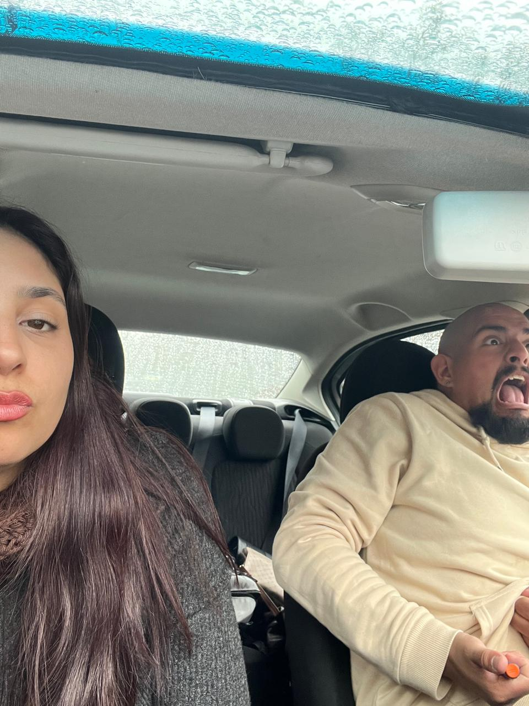

Hola! Mi nombre lo tenes un poco mas arriba. Quien soy? Posiblemente nadie importante, quiza nadie que logre nada interesante en un futuro, mierda hasta posiblemente nadie que pueda conseguir generar un cambio no solo en mi propia vida sino tambien en la vida de absolutamente nadie. Pero weno, por lo menos intento romper un poco los huevos haciendo estas cosas.
Ya tengo 28 años, pisando los 30. Siento que los 29 no son tan interesantes, el problema es cambiar el primer digito en la edad. Pasar de 8, 9 años a 10 es un cambio. Sentis que la adultez ingresa a tu vida. Claro, yo tuve que crecer de golpe por obligacion. Tuve la suerte de tener una madre que siempre me protegio de todas las cosas "feas" que muchos pueden sentirlas como muy pesadas, pero yo soy curioso por naturaleza. Lo que me trajo problemas, no graves, pero problemas al fin.
Imaginate llegar a los 18, toda tu vida la pasaste respondiendo a los adultos responsables en quienes creias que estaban en lo correcto. De un dia para el otro sos responsable de tus propias desiciones. Podes caer preso, podes endeudarte, podes hacer mal muchisimas cosas. Seguis con miedo, entendes que ahora hay nuevas responsabilidades, hay nuevos limites. De la nada, en un tiempo que pareciera infimo que paso volando, ya tenes una nueva decada encima. 20 años.
En este momento te das cuenta de muchas cosas, estas en una suerte de "limbo" en el que dia a dia te moves de un extremo a otro entre adolescencia y adultez. Podes tener un trabajo cuyos ingresos los destinas a tu futuro, una casa, un auto, una familia. Podes usar esos mismos ingresos para (como fue mi caso) jueguitos y cosas que siempre deseaste desde chico. No porque te hayan faltado cosas, sino porque por alguna razon las querias. Eso fueron mis 20 años.
Como ven, mis 20 no es una epoca que recuerde muy bien. Si bien consegui muchisimas cosas, tuve muchisimos avances, creci tanto fisica como mentalmente a limites que creia inalcanzables, siento que mis 20 no fueron lo suficientemente productivos. Quiza es esa sensacion de que deje pasar el tiempo y no inverti en mi propio futuro. Quiza sea que los tiempos son distintos a los de nuestros padres y yo me deje llevar por ello mismo. Pueden ser muchisimos los factores que me lleven a tomar una decision u otra. De lo que si estoy seguro es que, aunque me costo entenderlo y aceptarlos, mis 20 años fueron los mejores de todos. Fue como una especie de tutorial para mis 30. Tengo el conocimiento necesario, la madurez, mis creencias, todo formado en estos 28 años para saber de que soy capaz y de que no. En resumen? Soy capaz de absolutamente todo. Solo me hacian falta 28 años para creer en mi mismo.
Bienvenido a mis 30.
Aqui me gustaria dejar una lista de los lugares que mas me gustan visitar (no crean que es algo increible)